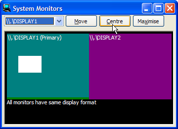
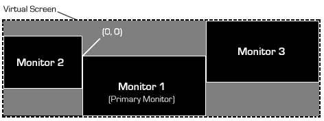

Multiple Monitor Support Sample Code (57K)
Multiple Monitor Support Sample Code (57K)
 Bugs: 0 / 0
Bugs: 0 / 0
 Issues: 0 / 0
Issues: 0 / 0
 Questions: 0 / 1
Questions: 0 / 1
 27 Jun 2003
27 Jun 2003
First Posted

Working with Multiple Monitors
Windows 98/2000 systems and above provide support for multiple monitors. This is a great thing except that it messes up old programs which attempt to do things like centre Windows or otherwise restrict their position to the visible area of the screen. This tip provides some simple code to allow you to work with multiple monitors.
About Multiple Monitors
Multiple monitor support in Windows is achieved by providing a rectangular Virtual Screen area onto which the physical monitors are mapped. The diagram below, taken directly from the MSDN documentation, demonstrates the kind of setup that could result if multi-monitor support were to be used by a madman or madwoman with plenty of old hardware and some bizarrely shapped monitors:
Idiotic but possible monitor layout
The useful things to note are that the monitors may or may not contain all of the actual virtual screen information and that a screen may have coordinates which are offset from the origin in either direction. Finally, the size of the virtual screen is currently not supposed to exceed +/-32767, since there are a number of old-school API calls and messages in Win32 which follow the sort of sharp thinking that led to the idea in DOS that no-one would ever have more than 64k memory in their PC. (Unfortunately, I feel this strategy is already pretty much kcufed since 200dpi screens are on their way. Although I can't afford any of them, never mind a 30" version...)
Using Multiple Monitors
The only times you really need to know about multiple monitors are:
- When positioning objects on screen
- When drawing objects which span multiple monitors, the monitors have different display characteristics and you want the display to render with the highest quality achievable.
Unfortunately, the second case is pretty much beyond the scope of VB unless you choose to do all painting by intercepting WM_PAINT messages. This would really be making life extraordinarily hard for yourself, even by vbAccelerator standards.
In any case, most multiple monitor systems are driven from a single graphics card and have the same colour depth in each monitor. When that doesn't occur, your users shouldn't really expect to be able to drag your lovely alpha-blended window onto their amber-screen EGA debugging display and expect everything will still look perfect.
So back to centring and sizing, which is relatively simple. You need to be able to determine the size of the virtual screen area and each of the monitors within that area.
Determing the Size of the Virtual Screen
In the same way that the usable screen area used to be provided through the SystemParametersInfo API call, the Virtual Screen size is also, as well as the number of physical monitors and whether each has the same colour depth. The code below demonstrates how to retrieve this information:
Private Const SM_CXVIRTUALSCREEN = 78 Private Const SM_CYVIRTUALSCREEN = 79 Private Const SM_CMONITORS = 80 Private Const SM_SAMEDISPLAYFORMAT = 81 Private Declare Function GetSystemMetrics Lib "user32" ( _ ByVal nIndex As Long) As Long Public Property Get VirtualScreenWidth() As Long VirtualScreenWidth = GetSystemMetrics(SM_CXVIRTUALSCREEN) End Property Public Property Get VirtualScreenHeight() As Long VirtualScreenHeight = GetSystemMetrics(SM_CYVIRTUALSCREEN) End Property Public Property Get DisplayMonitorCount() As Long DisplayMonitorCount = GetSystemMetrics(SM_CMONITORS) End Property Public Property Get AllMonitorsSame() As Long AllMonitorsSame = GetSystemMetrics(SM_SAMEDISPLAYFORMAT) End Property
Evaluating Monitor Size and Work Area
Each monitor has an overall size and a work area, which represents the size with any explorer bars (like the task bar, or the misguided Office docking help thingies) subtracted. The EnumDisplayMonitors API call is provided to allow this to be performed. This is a callback method which provides details of all attached monitors, along with a hMonitor handle which can be used to interrogate the monitor.
As with any callback function, unless you implement a Machine Code Thunk you must implement the function which gets called within a VB module. As my personal knowledge of machine code can be approximated as (or at least tends to) none, I've used module, which means the enumeration works as follows:
Private Declare Function EnumDisplayMonitors Lib "user32" ( _
ByVal hDC As Long, _
lprcClip As Any, _
ByVal lpfnEnum As Long, _
ByVal dwData As Long _
) As Long
Private Function MonitorEnumProc( _
ByVal hMonitor As Long, _
ByVal hDCMonitor As Long, _
ByVal lprcMonitor As Long, _
ByVal dwData As Long _
) As Long
' Do something with the monitor here...
MonitorEnumProc = 1
End Function
Public Sub EnumMonitors(cM As cMonitors)
EnumDisplayMonitors 0, ByVal 0&, AddressOf MonitorEnumProc, 0
End Sub
The parameters returned by the MonitorEnumProc are primarily aimed at responding to a WM_PAINT message. More usefully, the hMonitor handle can be converted into the details of the monitor in question: its name, its size and work area size and whether it is the primary monitor or not. To do this you use the GetMonitorInfo API function. This function is provided in both Unicode and ANSI versions to account for monitor names in either language. Both versions are translated in this code:
Private Type RECT
Left As Long
Top As Long
right As Long
bottom As Long
End Type
Private Const CCHDEVICENAME = 32
Private Type MONITORINFOEXA
cbSize As Long
rcMonitor As RECT
rcWork As RECT
dwFlags As Long
b(0 To CCHDEVICENAME - 1) As Byte
End Type
Private Type MONITORINFOEXW
cbSize As Long
rcMonitor As RECT
rcWork As RECT
dwFlags As Long
b(0 To CCHDEVICENAME * 2 - 1) As Byte
End Type
Private Declare Function GetMonitorInfoA Lib "user32" ( _
ByVal hMonitor As Long, _
lpmi As MONITORINFOEXA _
) As Long
Private Declare Function GetMonitorInfoW Lib "user32" ( _
ByVal hMonitor As Long, _
lpmi As MONITORINFOEXW _
) As Long
Private Const MONITORINFOF_PRIMARY = &H1
Private m_hMonitor As Long
Private m_sName As String
Private m_rcMonitor As RECT
Private m_rcWork As RECT
Private m_bIsPrimary As Boolean
...
If (IsNt) Then
Dim tMIW As MONITORINFOEXW
tMIW.cbSize = Len(tMIW)
GetMonitorInfoW hMonitor, tMIW
With tMIW
LSet m_rcMonitor = .rcMonitor
LSet m_rcWork = .rcWork
m_bIsPrimary = _
((.dwFlags And MONITORINFOF_PRIMARY) = MONITORINFOF_PRIMARY)
sName = .b
iPos = InStr(sName, vbNullChar)
End With
Else
Dim tMIA As MONITORINFOEXA
tMIA.cbSize = Len(tMIA)
GetMonitorInfoA hMonitor, tMIA
With tMIA
LSet m_rcMonitor = .rcMonitor
LSet m_rcWork = .rcWork
m_bIsPrimary = _
((.dwFlags And MONITORINFOF_PRIMARY) = MONITORINFOF_PRIMARY)
sName = StrConv(.b, vbUnicode)
End With
End If
iPos = InStr(sName, vbNullChar)
If (iPos > 0) Then
m_sName = Left(sName, iPos - 1)
Else
m_sName = sName
End If
Note that if you don't need the monitor name, then you can simplify this call by missing out the name parameter entirely. In this case you only ever need the ANSI version of the function and the declares look like this:
Private Type MONITORINFO
cbSize As Long
rcMonitor As RECT
rcWork As RECT
dwFlags As Long
End Type
Private Declare Function GetMonitorInfoA Lib "user32" ( _
ByVal hMonitor As Long, _
lpmi As MONITORINFO _
) As Long
Wrapping It Up
With this code its easy to create wrapper for the function. The class cMonitors is responsible for providing information about the Virtual Screen area, and to store a collection of monitors which contain information about the individual monitors. As VB provides no easily accessible support to a strongly typed collection, the implemented collection is an index only version, even though access by the hMonitor handle would be sensible. The code is arranged so that cMonitors class is responsible for responding to callbacks from the mMonitors module containing the callback and the creates an array of cMonitor objects which can be used to access the position, name and primary information about the monitors.
The sample code demonstrates some of the types of functions you might want to achieve in a multiple monitor system, such as ensuring your form is on a specific monitor, centred on a specific monitor or maximised there.
Conclusion
Working with multiple monitor systems is generally trivial unless you have to save or restore a screen position. In this case you can easily get access to the details of the current monitor arrangement using the simple classes provided with this tip.